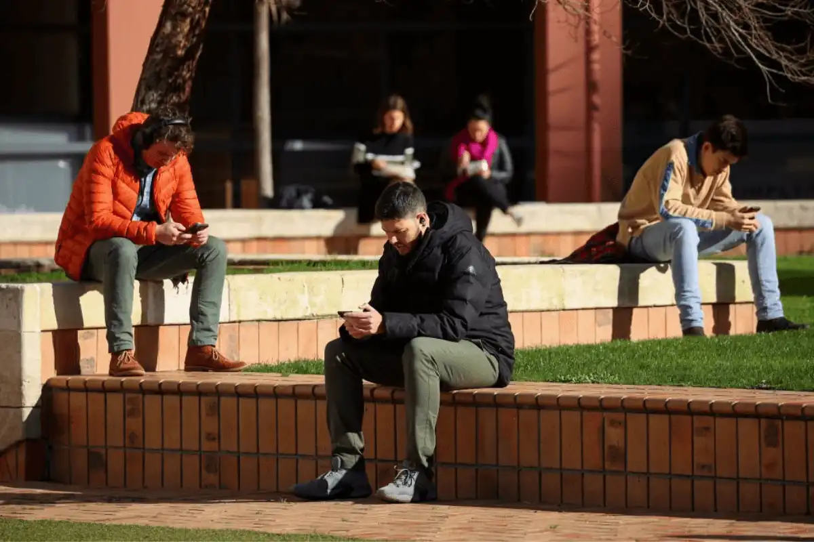

The internet has revolutionized social life in profound ways, reshaping how people communicate, connect, and interact on a global scale. With the advent of social media platforms, online forums, and messaging apps, individuals can now easily bridge geographical distances to form communities based on shared interests, beliefs, and identities. The internet has democratized access to information, enabling the rapid dissemination of news, ideas, and cultural trends. It has facilitated connections between people from diverse backgrounds, fostering empathy, understanding, and collaboration across borders. However, the pervasive influence of the internet also raises concerns about privacy, cybersecurity, and the spread of misinformation. The rise of digital communication has altered the dynamics of relationships, with some critics arguing that online interactions can be superficial and devoid of genuine human connection. Moreover, the constant connectivity afforded by smartphones and social media has led to concerns about addiction, mental health issues, and the erosion of face-to-face communication skills. As the internet continues to shape social life, it is imperative to navigate its complexities thoughtfully and ethically, harnessing its potential to foster meaningful connections and promote positive social change.
A qoute from the National Center for Biotechnolgy Information
"The findings of this study showed that the Internet offers a quick access to information and facilitates communication however; it is quite dangerous, especially for young users. For this reason, users should be aware of it and face critically any information.. "read more